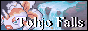
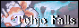

|
|
Hey, here you can link to me using one of my banners or buttons.
Please upload the button onto your own server.
Also, remember to
link them to http://tohjo.neocities.org!
 

Do you wonder why I picked so many Pokémon for my buttons? Well,
they all
have a special meaning to some part of this site. I'll explain
em below.
the first one is the ORIGINAL affiliate button for tohjo falls,
made by pokeadvance or boundless in 2001-2002. It kinda style
clashes with the other ones because its not using the same
template as the rest do.
The second and fifth buttons were based on the banner image of
the site.
Goldeen and Seaking were chosen because they're in the encounter
table for the in-game Tohjo Falls.
Togepi, Togetic, Furret, Mew, Chansey and Blissey are the
favorite Pokémon of the original webhost, Matt/MJPtheMaster.
Anorith was chosen because it's my(Duke's) favorite Pokémon!
Raichu was chosen because it was the name of one of the original
writers for Tohjo Falls back in 2003.
Thanks to everyone who made buttons for me, especially
Poke
Advance and Growlithe's Pokémon Homelands!
|
|
|
|